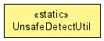

org.jboss.netty.util
Class UnsafeDetectUtil
java.lang.Object
 org.jboss.netty.util.UnsafeDetectUtil
org.jboss.netty.util.UnsafeDetectUtil
public final class UnsafeDetectUtil
- extends Object

Utility which checks if class can be found in the classpath
and that it can be accessed using "theUnsafe" field which is not true for all platforms, i.e Android
where it is called "THE_ONE".
| Methods inherited from class java.lang.Object |
clone, equals, finalize, getClass, hashCode, notify, notifyAll, toString, wait, wait, wait |
isUnsafeFound
public static boolean isUnsafeFound(ClassLoader loader)
isUnsafeFound
public static boolean isUnsafeFound()
Copyright © 2008-2012 The Netty Project. All Rights Reserved.